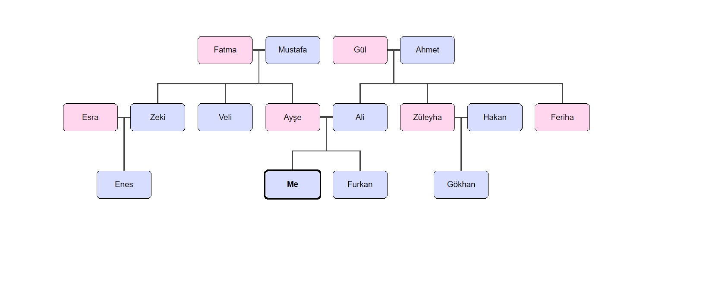

I was born in 1996, Kayseri. After I finished primary school, I went to Isıklar Air Force Military High School. I graduated from 5 years with a good degree and went to Air War College. 1 year later, all of students are seperated to other universities. Now I am a student in Anadolu University.
My Hobbies
I enjoy jogging and playing computer games as everyone likes also I have done martial arts such as Judo, Taekwondo. I like drawing, playing football and listening music.
My Family
